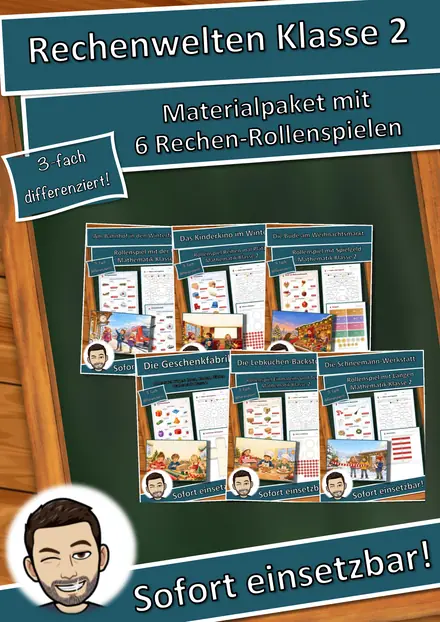
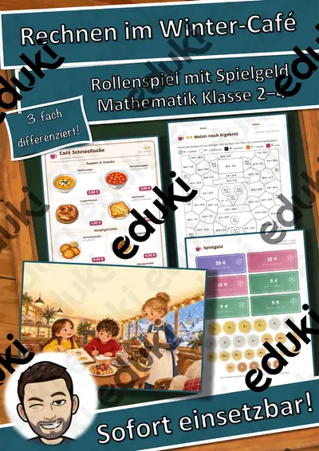

Das Kinderkino im Winter – Rollenspiel Einmaleins und Verteilen, 3-fach differenziert (Klasse 2)
Licht aus, Kino an! In meinem Rechen-Rollenspiel für Klasse 2 eröffnen die Kinder ein Kinderkino im Winter: Sie verkaufen Sitzreihen, rechnen Reihen mal Plätze mit dem Einmaleins, finden Platznummern und verteilen Plätze und Snacks gerecht – ganz ohne Computer oder Tablet.
Dreifach differenziert – alle Kinder spielen gemeinsam am Tisch und rechnen trotzdem auf ihrem Niveau:
- ★ Reihen mit 2, 5 oder 10 Plätzen, Platznummern
- ★★ alle Einmaleins-Reihen, Verdoppeln
- ★★★ malnehmen, Plätze gerecht verteilen, Reicht es?
Enthalten (25 Seiten + Deckblatt):
- Hinweise für Lehrkräfte mit Stundenablauf, Lehrplanbezug (LehrplanPLUS Bayern), Kopierplan und ausgefülltem Beispiel
- 3 Kinotafeln (★/★★/★★★) mit 8 illustrierten Waren
- Standschild, Rollenkarten (Kinokasse · Snack-Theke · Platzanweisung) und Satzstreifen für DaZ
- 3 Kinozettel mit Ich-kann-Leiste und Partnerkontrolle
- 12 Auftragskarten
- Knobel-Kinokasse mit 9 Aufgaben für schnelle Rechner
- Ausmalbild für schnelle Rechner
- Malen nach Ergebnis in 3 Stufen (★ Malaufgaben mit 2, 5, 10 · ★★ gemischte Malaufgaben · ★★★ Teilen im Einmaleins) – das Ergebnis verrät die Farbe, am Ende erscheint eine gestreifte Popcorntüte mit einem Stern
- Lösungen zur Selbstkontrolle (auch farbige Lösungsbilder zu Malen nach Ergebnis)
- Urkunde „Kino-Rechenprofi“ farbig und zum Ausmalen
Viel Spaß im Kinderkino wünscht Snice
FachMathematik
KlasseKl. 2
SchulformGrundschule
MaterialartArbeitsblätter, Stationenlernen, Mal- und Bastelvorlagen, Fördermaterial/Inklusion
Ähnliche Materialien

Die Gruselparty-Werkstatt – Rollenspiel Einmaleins und Verteilen, 3-fach differenziert (Klasse 2)

Materialpaket Rechenwelten im Winter für die 2. Klasse: 6 Mathe-Rollenspiele, 3-fach differenziert (Weihnachtsmarkt, Kinderkino, Lebkuchen & mehr)

Rechnen im Winter-Café – Rollenspiel Rechnen mit Geld, 3-fach differenziert (Klasse 2–4)

Die Lebkuchen-Backstube – Rollenspiel Einmaleins und Teilen, 3-fach differenziert (Klasse 2)

Der Bratapfelstand – Rollenspiel Einmaleins mit Geld, Euro und Cent, 3-fach differenziert (Klasse 2)

La panadería de jengibre – Rollenspiel Einmaleins und Teilen auf Spanisch, 3-fach differenziert (Klasse 2)

Der Weihnachtszirkus – Rollenspiel Division mit Rest, 3-fach differenziert (Klasse 3)